朝のニュースまとめ
2026年10月23日（金）
🇯🇵 日本の主要ニュース
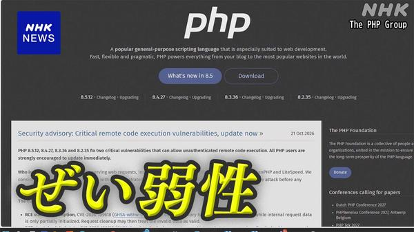
PHP脆弱性、すき家・JR・証券会社などでサービス一時停止相次ぐプログラミング言語「PHP」の重大な脆弱性を受け、企業や行政機関がメンテナンスのためにサービスやウェブサイトの公開を一時停止する動きが相次ぎました。
出典：NHK
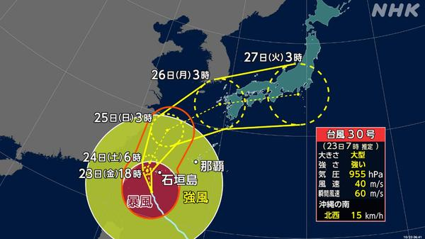
台風30号、先島諸島で暴風・大雨に厳重警戒大型で強い台風30号が先島諸島に近づき、24日にかけて住宅が倒壊するような猛烈な風のおそれがあります。線状降水帯の発生も懸念され、西日本・東日本でも大雨のおそれがあります。
出典：NHK
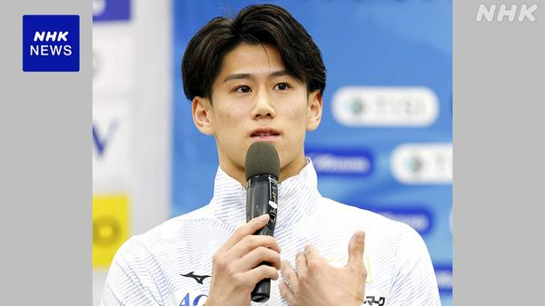
体操世界選手権、橋本大輝が男子個人総合で4連覇オランダで開かれている世界選手権の男子個人総合決勝で橋本大輝選手が金メダルを獲得。大会4連覇は6連覇の内村航平さん以来2人目です。
出典：NHK
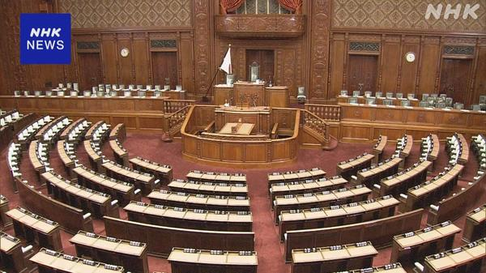
衆院定数削減、自民が「比例で31議席削減」案を提示自民党は比例代表で31議席を削減するなどの新たな案を示し、多くの党の賛同を得たい考えです。野党からは理解の声と異論が出ており、来週改めて協議します。
出典：NHK
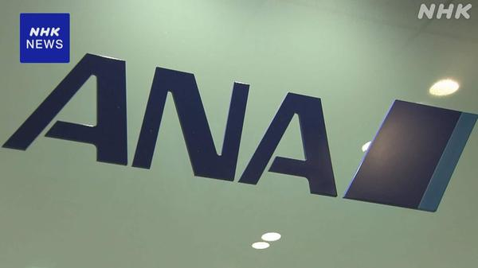
ANA、エア・ドゥとソラシドエアへの追加出資を検討燃料費の高騰などで国内線の苦境が続くなか、ANAホールディングスは両社を傘下にもつ会社への追加出資を検討。整備の共通化などで効率化を進めるねらいです。
出典：NHK
カプコン、全世界の会員情報約1177万件が漏えい
ゲーム大手カプコンのオンライン会員サービスに不正アクセスがあり、全世界の会員のメールアドレスなど約1177万件の個人情報が漏えいしたと発表しました。
出典：NHK
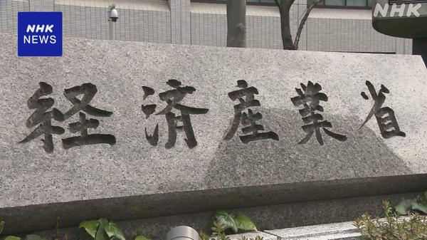
経産省、「ホワイトハッカー」チームを立ち上げへ不正アクセス被害が相次ぐことを受け、経済産業省は所管の独立行政法人に、サイバー攻撃の手法に詳しいエンジニアのチームを新設する方針を固めました。
出典：NHK
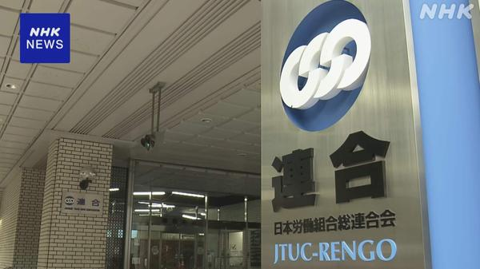
連合、来春闘で「6%中心に5%以上」の賃上げ要求へ連合は来年の春闘で、定期昇給分を含め6%を中心に5%以上の賃上げを求める方針を決めました。5%以上の要求は4年連続です。
出典：NHK
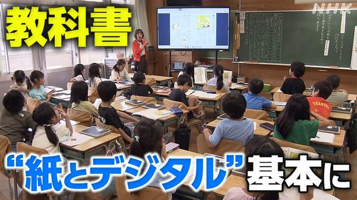
デジタル教科書は「紙とデジタル」が基本に 文科省指針案4年後から導入されるデジタル教科書について、文科省は紙と組み合わせた形態を基本とし、小学4年生以下ではデジタルだけの教科書は認めない方針を示しました。
出典：NHK
🌍 世界の主要ニュース

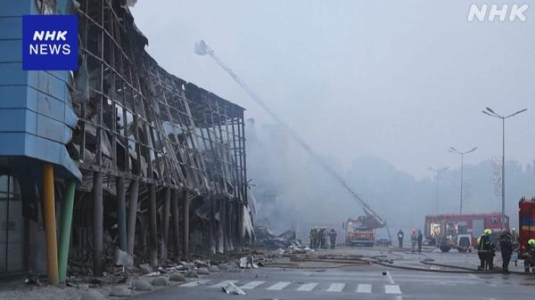
ロシア軍がウクライナに大規模攻撃、2人死亡・30人以上けがゼレンスキー大統領はロシア軍の大規模攻撃を非難し、攻撃の応酬が激しくなれば、動きが出ている和平案の協議再開に影響する可能性もあると述べました。
出典：NHK
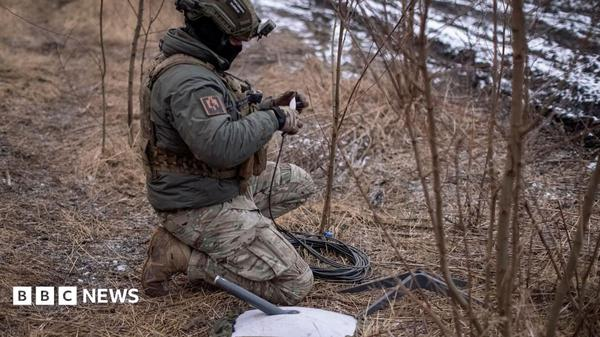
トランプ氏「マスク氏がウクライナのStarlink接続を復旧」ウクライナは軍事面でStarlinkに頼っており、トランプ大統領はマスク氏がアクセスを戻したと述べました。マスク氏は制限を繰り返し否定しています。
出典：BBC
フランス暴動受け、パリは夜間外出禁止を延長 マルセイユ・リヨンはデモ禁止
デモは一部の都市で労働組合が主催するものに限って認められ、土曜日は主要な美術館も閉館します。マクロン大統領は正当な理由のないデモは認めない姿勢です。
出典：BBC
メルクとモデルナのがんワクチン、メラノーマの死亡・再発リスクを42%低減
両社の個別化がんワクチンの臨床試験で、メラノーマの死亡または再発のリスクが42%下がりました。一方で期待先行の反動で株価は下落しました。
出典：Reuters
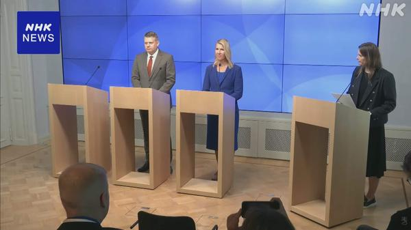
フィンランド、「核のごみ」最終処分場の操業を許可フィンランド政府は高レベル放射性廃棄物の最終処分場の操業を許可すると発表しました。運営会社は年末までに処分を始める計画です。
出典：NHK
🤖 AIニュース
OpenAI、評価額1.25兆ドルで300億ドルの新規調達を検討
IPOを前に新たな資金調達を進めていると報じられています。実現すれば未上場企業として史上最高の評価額になります。
出典：TechCrunch
1Password、パスワードを見せずにAIエージェントが代理ログインできる機能
AIエージェントがユーザーの個人アカウントにログインできる一方で、認証情報そのものはエージェントに渡さない仕組みです。
出典：TechCrunch
Microsoft、AI診断が難症例で医師を上回ったと発表
Science誌の研究で、同社のAI診断システムが一般医より難症例で高い成績を示しました。ただ改善の多くは基盤のAIモデルによるものとされています。
出典：TechCrunch
Google CloudにOpenAIの「GPT-6 Astra」などが追加
Model GardenにOpenAIのGPT-6 Astra、GPT-6.1 Sol、GPT-6 Lunaが加わり、主要3社のクローズドモデルを使える唯一のハイパースケーラーになったとしています。
出典：ITmedia AI+
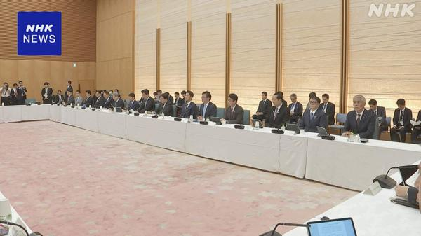
政府「AI改革推進会議」初会合、弁護士などのAI活用ルールを整理へ資格のない人による業務が禁じられている弁護士などの分野で、AIを活用する際のルール整理を進めることを確認しました。
出典：NHK
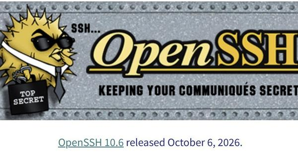
Anthropic、Claudeでソフトの攻撃対象領域を洗い出す研究を公開オープンソース25件を分析して493件の問題を特定。OpenSSHでは認証前に到達できるコードを約5分の1削減し、最新版に反映されました。
出典：ITmedia NEWS
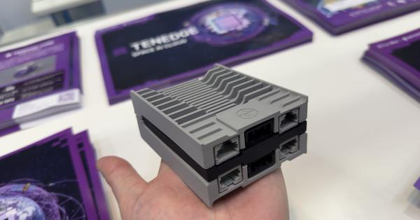
手のひらサイズの「宇宙AIデータセンター」、JAXA後押しの国内新興が開発宇宙で取得したデータをその場で小型AIが処理し、軽量化してから地上に送る仕組みを目指す国内ベンチャーの進捗を伝えています。
出典：ITmedia NEWS
💻 PC・ガジェットニュース
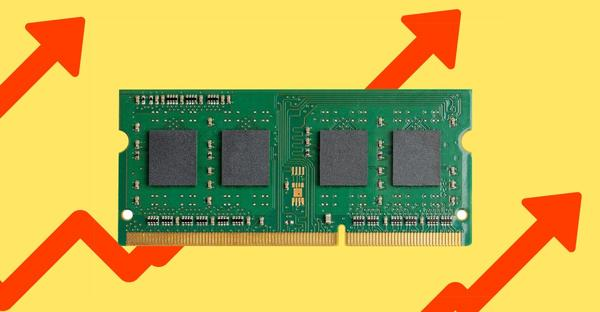
世界のPC出荷、7〜9月期に20%超減少 メモリ高騰が直撃数か月続いた値上げで新しいPCの需要が落ち込み、Counterpointなどの調査で出荷台数が20%以上減りました。
出典：The Verge
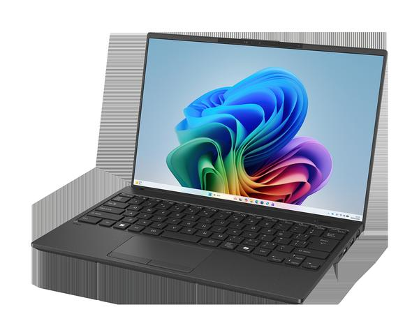
世界最軽量634gの14型「FMV Note U」、全機種Copilot+ PCに富士通のノートPC秋冬モデルが登場。14型で約634gのFMV Note Uを筆頭に、FMV Note Cなど多彩なラインナップです。
出典：PC Watch
1,199gの16型有機ELノート「LG gram Pro 16」など6機種
LGが16型有機ELを約1.2kgに収めたフラグシップから、Core 5搭載の14型まで6機種を11月中旬から順次発売します。
出典：PC Watch
カラフルな新「Dell 14S」が日本上陸、14万9800円から
IFA 2026で発表されたエントリー向け新モデルの販売が日本でも始まり、11月1日までは4.5万円引きで購入できます。
出典：ITmedia PC USER
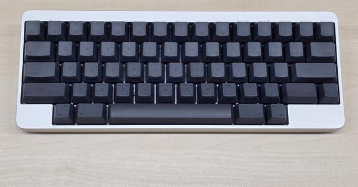
33万円のキーボード「HHKB Professional Elite」、全世界300台限定HHKB誕生30周年の集大成となる限定フラグシップ。英語配列のみで有線に特化した「原点回帰」モデルです。
出典：ITmedia PC USER
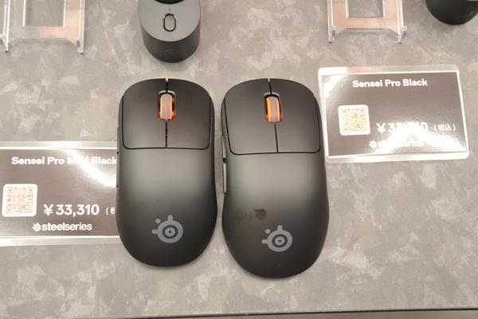
SteelSeries、UWB接続・交換式バッテリの「Sensei Pro」「Rival Pro」UWB接続と交換式バッテリを採用した無線専用ゲーミングマウス4機種を発表。価格は各3万3,310円です。
出典：PC Watch
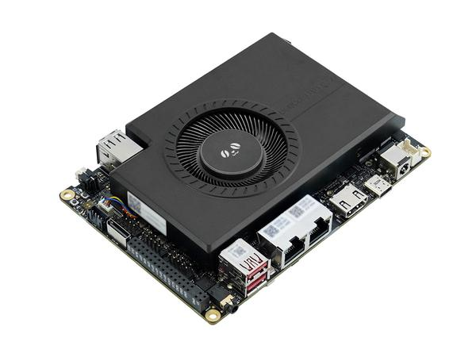
35B級LLMが動くx86 SBC「LattePanda Sigma 2」Core Ultra X7 358H（Arc B390）を搭載したシングルボードPC。予約期間中は2,599ドルです。
出典：PC Watch
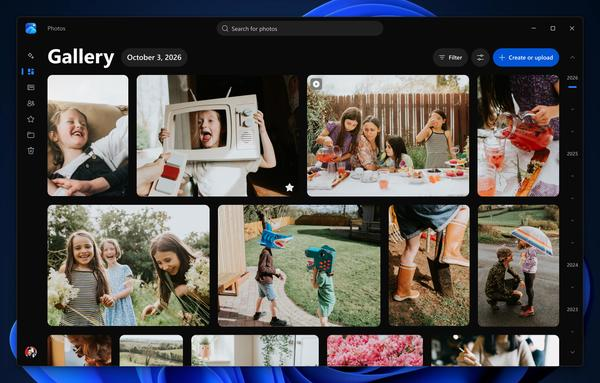
Windows 11の「フォト」アプリが刷新、iCloud写真もまとめて管理ギャラリーを一新し、PC内・OneDrive・iCloudの写真を一緒に扱えるように。アプリ自体も高速化されます。
出典：PC Watch
PHP2Shell、公表4日前に悪用の試み Amazonが「公表前まで遡って調査を」
Amazonの脅威調査チームが、公表4日前にハニーポットで悪用の試みを検知。AIで攻撃コード作成が加速しているとして、前提の見直しを呼びかけました。
出典：ITmedia NEWS
🔥 Xのトレンド（日本）
音楽・エンタメ系は除外。「未確認」はX上の投稿だけを根拠にしたもので、報道機関による裏付けはありません。
1. 中国政府系
Microsoftが「中国政府とつながりのあるハッカー集団がAIツールで世界の数百の組織を攻撃した」と発表。報道各社が「中国政府系」と書く中、NHKの見出しが「中国系」だったことへの指摘も多く拡散しています。
出典：NHK・共同通信
阪神の梵英心2軍打撃コーチが辞意を申し入れたと報じられ、退団なら今オフのコーチ退団は4人目に。「辞任ドミノ」と驚く声が続いています。
出典：デイリースポーツ・スポニチ・スポーツ報知（X上の記事共有で確認）
3. +0.02
NYダウが前日比+0.02%（+11.89ドル）で取引を終え、終盤にプラス転換したことを伝える投稿が並んでいます。世界的にAI関連株の下落が目立った一日でした。
⚠ 未確認（X情報のみ）
Grok Bot がまとめました。